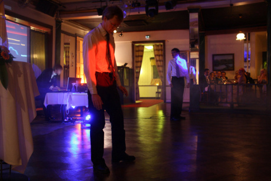

Alvin Lucier and his EEG-based bio-music system. Sources: 1, 2.
Our three-man team has developed a sonification system for controlling various aspects of an electronic music performance. We use continuous inputs such as respiration to control synthesis and effect parameters. Events such as heartbeats provide a sync source for tempo and trigger scenes, samples and MIDI notes. Accelerometer-based posture measurement is typically used so that lateral movements alter the melodic structure of a piece, leaning forward is interpreted as an aggressive posture (reflected in the song’s dynamics), and leaning backwards eases the tension in the song. Bio-controlled lighting and projected visualisations are generated to augment the musical piece.
An optional “analysis supervisor” conducts the performance by assigning tasks to individual biosignal streams, which allows the musicians to focus on their performance by removing the need to constantly monitor their biosignals in relation to the piece. The analysis supervisor identifies the optimal streams to be used for synthesis or lighting control and oversees the transitions between tracks.
Since the mid-1960’s, artists have used biosignals as an alternative means of input. Pioneers in this field include Alvin Lucier, Manford L. Eaton, Richard Teitelbaum, David Rosenboom, Erkki Kurenniemi and Ralph Lundsten. A typical application of biosignals has been to generate sounds based on EEG or ECG measurement.
Alvin Lucier and his EEG-based bio-music system.
Sources: 1,
2.


Manford L. Eaton envisioned complex bio-music systems including multi-modal measurement and feedback loops.
Source: Manford L. Eaton. 1974. Bio-music. Something Else Press.
Our sonification system is based on measuring biosignals with Bluetooth biosignal sensors. We currently use the Zephyr BioHarness measurement belt, which provides continuous information on heart rate, respiration and 3-D acceleration. The biosignals are routed to a digital audio synthesis environment, where the music is generated. We use Ableton Live for live performances and a more compact synthesis environment in permanent installations. The source codes of the Zephyr Bluetooth protocol are available at GitHub: zephyr-bt.
 Live at Ravintola Kaisaniemi, Oct 10, 2012.
Producing expressive and entertaining music based on biosignal measurement is an interesting research topic. We have so far published one paper (Paalasmaa et al. 2012) on our technology, at the 11th International Symposium on Intelligent Data Analysis in October 2012.
Paalasmaa, J., Murphy, D. J. & Holmqvist, O., 2012. Analysis of Noisy Biosignals for Musical Performance. 11th International Symposium on Intelligent Data Analysis (IDA 2012). Lecture Notes in Computer Science 7619. pp. 241-252. Springer, Heidelberg. download PDF – doi: 10.1007/978-3-642-34156-4_23
{% include footer.html %}